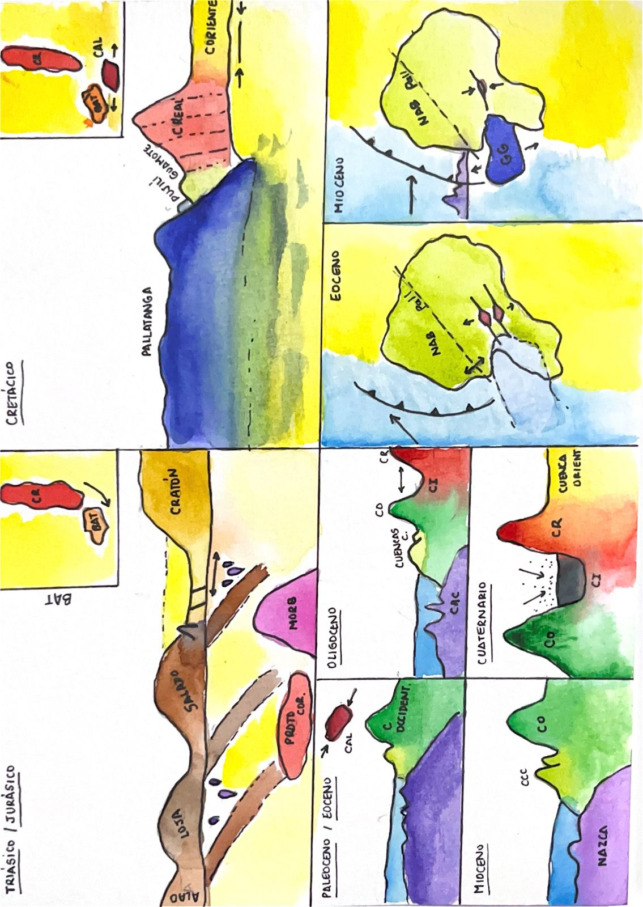
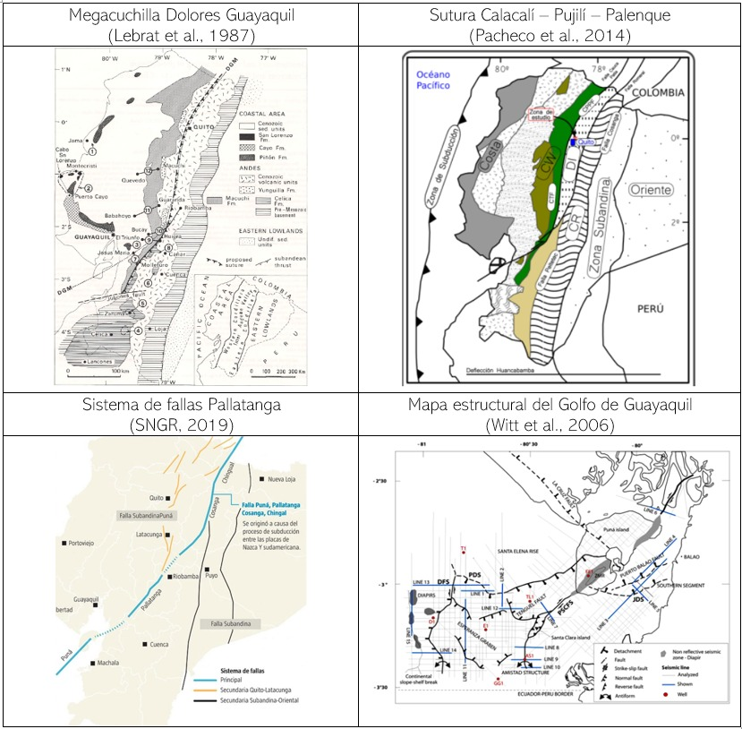

Menú
1. Introducción
2. Geodinámica
3. Cuenca Oriente
4. Cordillera Real
5. Bloque Amotape-Tahuín
6. Cuenca Lancones Alamar
7. Cordillera Occidental
8. Cuencas de antearco
9. Cuencas intramontanas
10. Callejon Interandino y
Arco Cuaternario
11. Evolución Geológica
del Ecuador
12. Tectónica de los
Andes ecuatorianos
×

×
